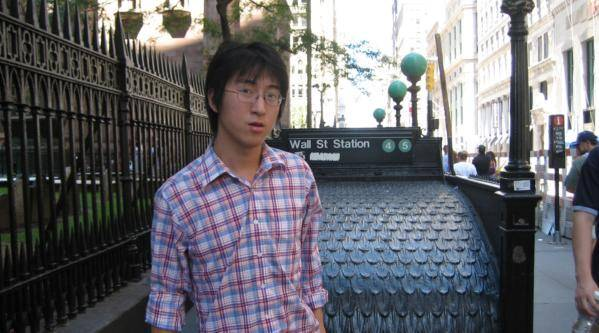

Xiang Bai
Professor
xbai@hust.edu.cn
Director, HUST MC Lab Computer Vision Group
Department of Electrical Information and Communications Department, HUST
About Me
I am a professor at the Department of Electronics and Information Engineering, Huazhong University of Science and Technology (HUST). I received my Ph.D. in Communication and Information Engineering, HUST. My research interests focus on Computer Vision, Pattern Recognition, and Intelligent Systems. I lead the Visual Computing group, which is part of Media and Communication Lab (MC lab), HUST. Here are some ongoing projects:
- Shape Representation, 2D\3D Shape matching and Retrieval
- Scene Text Detection and Recognition A brief survey , Slice
- Object Detection and Image Classification, Contour Detection\Grouping
Opening Positions
- I am currently recruiting self-motivated and dedicated Ph.D./M.S. students with solid background in mathematics, programming, or writtern English etc. Please feel free to contact me if you are interested.
- I plan to host a selected number of PostDocs with strong research background.
- Looking for fresh faculty members to join our group, please contact me at least half a year ahead of your arriving.
Recent News
- June, 2016: Baoguang Shi got the support from CSC for visiting Cornell University. Congratulations!
- April, 2016: VALSE 2016 & IEEE SIDAS 2016 were successfully held.
- March, 2016: We achieved the first place in Shrec2016 competition: Large-Scale 3D Shape Retrieval under the perturbed case.
- March, 2016: Four papers accepted by CVPR 2016!
- January, 2016: I become an editorial board memer of the journal "Pattern Recognition Letters".
Selected Recent Publications
- NEW!
C. Yao, X. Bai, N. Sang, X. Zhou, S. Zhou, Z. Cao.
Scene Text Detection Via Holistic, Multi-Channel Prediction.
arXiv:1606.09002, 2016.
- NEW!
S. Bai, S. Zhang, X. Bai, Z. Zhang, Q. Tian.
Smooth Neighborhood Structure Mining on Multiple Affinity Graphs with Applications to Context-sensitive Similarity.
European Conf. on Computer Vision (ECCV), 2016.
- B. Shi, X. Wang, P. Lv, C. Yao, X. Bai.
Robust Scene Text Recognition with Automatic Rectification.
IEEE Conf. on Computer Vis. & Pattern Recog. (CVPR), 2016.
- Z. Zhang, C. Zhang, W. Shen, C. Yao, W. Liu, X. Bai.
Multi-Oriented Text Detection with Fully Convolutional Networks.
IEEE Conf. on Com. Vis. Patt. Recog. (CVPR), 2016.
- S. Bai, X. Bai, Z. Zhou, Z. Zhang, L.J. Latecki.
GIFT: A Real-time and Scalable 3D Shape Search Engine.
IEEE Conf. on Comput. Vision & Pattern Recog. (CVPR), 2016. (see its performances on Shrec2016 competition: Large-Scale 3D Shape Retrieval) [CODE]
- W. Shen, K. Zhao, Y. Jiang, Y. Wang, Z. Zhang, X. Bai.
Object Skeleton Extraction in Natural Images by Fusing Scale-associated Deep Side Outputs.
IEEE Conf. on Computer Vision and Pattern Recognition (CVPR), 2016, Supplementary Material. [CODE]
- Y. Zhou, X. Bai, W. Liu, L.J. Latecki.
Similarity Fusion for Visual Tracking,
International Journal of Computer Vision (IJCV), 118 (3), 337-363, 2016. (Extension of NIPS12 paper)
- S. Bai, X. Bai.
Sparse Contextual Activation for Efficient Visual Re-ranking,
IEEE Trans. on Image Processing (TIP), 25(3): 1056-1069, 2016. [CODE]
- B. Shi, X. Bai, C. Yao.
An End-to-End Trainable Neural Network for Image-based Sequence Recognition and Its Application to Scene Text Recognition.
CoRR abs/1507.05717, 2015. [CODE][Music Score Recognition Datasets]
- X. Wang, Z. Zhu, C. Yao, X. Bai.
Relaxed Multiple-Instance SVM with Application to Object Discovery.
International Conference on Computer Vision (ICCV), 2015.[CODE]
- X. Bai, S. Bai, Z. Zhu, L. Latecki.
3D Shape Matching via Two Layer Coding.
IEEE Transactions on Pattern Analysis and Machine Intelligence (PAMI), 37(12): 2361-2372, 2015.
- W. Shen, X. Wang, Y. Wang, X. Bai, Z. Zhang.
DeepContour:A Deep Convolutional Feature Learned by Positive-sharing Loss for Contour Detection.
IEEE Conference on Computer Vision and Pattern Recognition (CVPR), 2015 . [CODE] (Pre-computed Result on BSDS500) (PR-curve Data)
- Z. Zhang, W. Shen, C. Yao, X. Bai.
Symmetry-based Text Line Detection in Natural Scenes.
IEEE Conference on Computer Vision and Pattern Recognition (CVPR), Boston, MA, June 2015.[Executable Software]
View More
Awards and Honors
- Hongshan District Outstanding Youth, 2014 (第九届武汉市洪山区十大杰出青年）
- Excellent Young Scientist Foundation of NSFC 2012
- New century excellent talent of Ministry of Education, 2012
- National Excellent Doctoral Dissertation nomination, 2012
- Hubei Province Outstanding Doctoral Thesis, 2011
- Microsoft Fellowship, 2007
Students
- Current students
- Baoguang Shi Ph.D. student
- Song Bai Ph.D. student (National PhD Fellowship 2015)
- Xinwei He Ph.D. student
- Xiaolong Liu Ph.D. student
- Pengyuan Lv Master student
- Zhichao Zhou Master student
- Mingkun Yang Master student
- Minghui Liao Master student
- Jieru Mei Undergraduate student
- Current Research Scienists
- Former students
- Bo Wang, (2010) Hubei Province Excellent Undergradute Graduation thesis, now at Stanford University.
- Tianyang Ma, (2010) Undergradute Student, HUST; Ph.D. Temple Univerisity; Now at Amazon Company.
- Wei Shen (2013), Ph.D. HUST, Tencent Fellowship, co-supervised with Prof. Hongyuan Wang, now a faculty member of Shanghai University
- Xinggang Wang (2014), Ph.D. HUST, Microsoft Fellowship 2012, National PhD Fellowship, co-supervised with Prof. Wenyu Liu, Ass. Prof. of HUST
- Cong Yao (2014), Ph.D. HUST,National PhD Fellowship, co-supervised with Prof. Wenyu Liu, now at Megvil.
- Yu Zhou (2014), Ph.D. HUST, co-supervised with Prof. Wenyu Liu, now a faculty member of Beijing University of Post and Telecommunications
- Junwei Wang, Ph.D (2012), HUST co-supervised with Prof. Wenyu Liu, now at 709 Institute, Wuhan
- Chunyuan Li (2011), Undergradute Student, HUST; Now at Duke University
- Chen Shen (2013), Master HUST, now at Temple University
- Cong Rao (2014), Master HUST, National Master Fellowship, now at Temple University.
- Weichao Qiu (2014), Master HUST, now at University of California, Los Angeles (UCLA)
- Yan Wang,(2011) Hubei Province Excellent Undergradute Graduation thesi, now at NTU
- Quanming Yao (2014), Hubei Province Excellent Undergradute Graduation thesis, now at HKUST
- Yueming Wang (2014), Master HUST, National Master Fellowship, now at Taobao Company, Hangzhou
- Yi Xiong (2014), Master HUST, now at Tencent Company, Shenzhen
- Changtao Wang (2013), Master HUST, worked in Baidu Company, Beijing
- Chao Cai (2013), Master HUST, now at Zhongyuan Electronic Information Corporation, Wuhan
- Le He (2015) Master HUST; now at Toutiao
- Tingwu Hou (2015) Master HUST; now at Huawei
- Xu Min (2014), Undergradute student, HUST; Now at Tsinghua University
- Yajun Gao (2011), Undergadute student, HUST; Georgio Insititute of Technology, Master. Now at Amazon
- Zhuotun Zhu (2015) Undergradute student, HUST, Young Microsoft Fellowship; Now at University of California, Los Angeles (UCLA)
- Zheng Zhang (2016), Master, HUST, National Master Fellowship 2015, Now at Microsoft, Suzhou.
- Chengquan Zhang (2016), Master, HUST, Now at Baidu, Shenzhen.
- Hongyang Wang (2016) Undergradute student, HUST, Young Microsoft Fellowship; Now at Carnegie Mellon University (CMU)
- Pan Chen (2016) Ph.D., HUST, co-supervised with Prof. Wenyu Liu. Now a faculty member in Chinese University of Geosciences